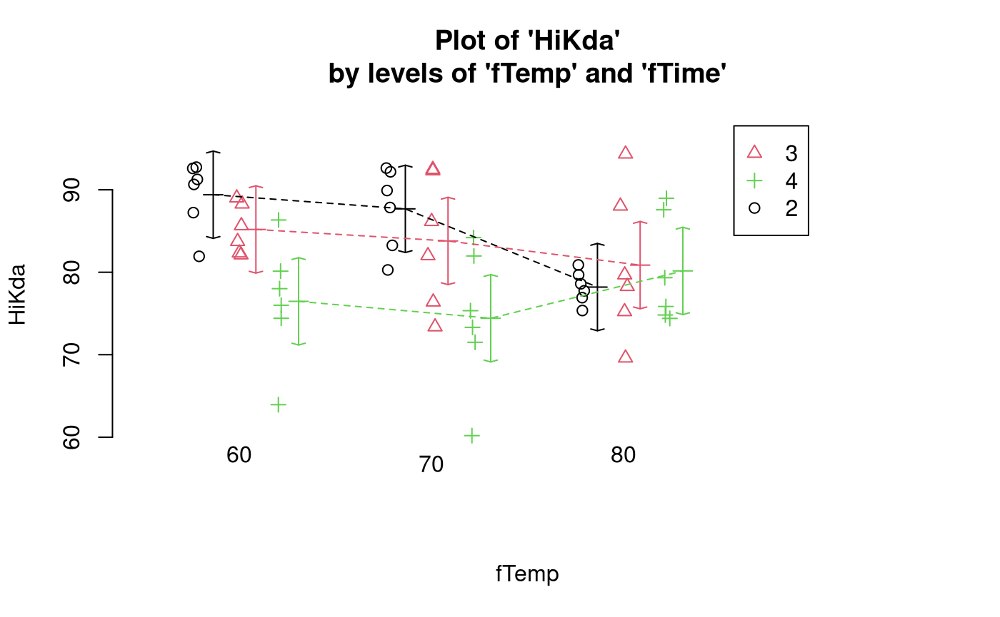
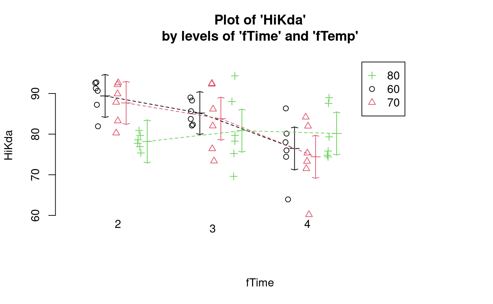
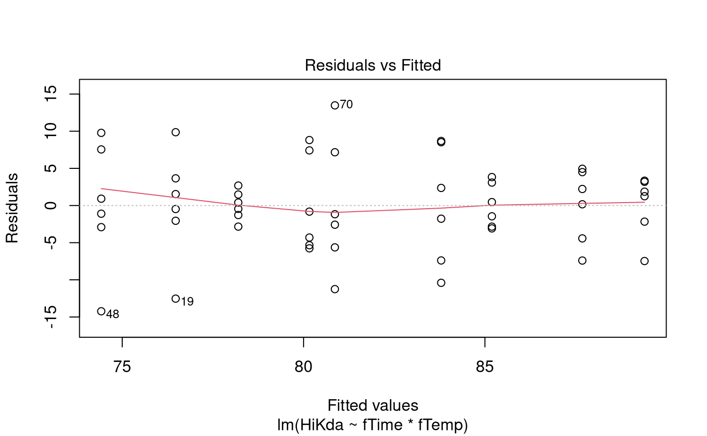
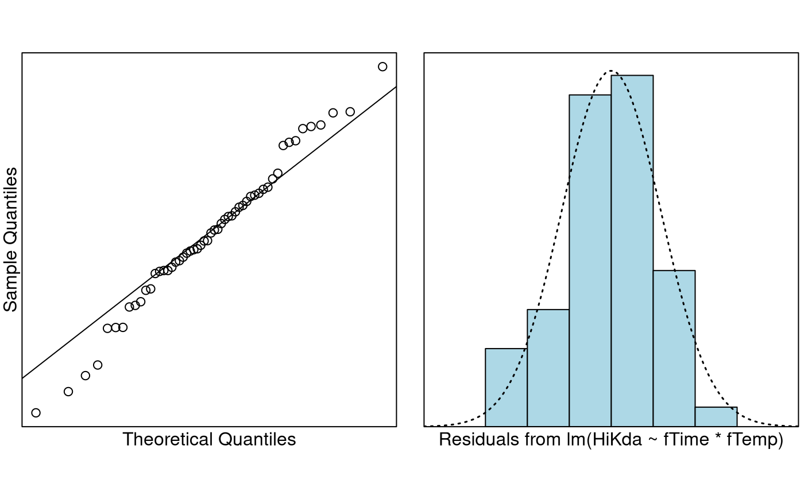

Case Study 12.3: Extracting dietary supplements from seaweed
Source:vignettes/articles/CS12_3.Rmd
CS12_3.RmdProblem
Fucoidan is a dietary supplement found in several species of brown seaweed, including the invasive species Undaria which is now widespread in New Zealand.
One silver lining to the invasion of Undaria is that it has potential to be a valuable source of fucoidan. These data come from a study investigating the yield of fucoidan from Undaria under different laboratory conditions.
The response is HikDa (a measurement based on molecular
weight), and the explanatory variables are the two factor variables
fTemp (temperature level) and fTime (time
level), each of which has three levels.
The variables of interest were:
-
HiKda: A measurement based on molecular weight. -
fTemp: A three-level factor with the levels “60”, “70”, and “80”. -
fTime: A three-level factor with the levels “2”, “3”, and “4”.
Question of Interest
We wish to determine how the yield of fucoidan from Undaria depends on the temperature and time level, and whether these factors influence each other.
Read in and Inspect the Data
# The call for tab delimited data
Weed.df = read.table("Weed.txt", header = TRUE, sep = "\t")
# Several R commands to subset the data for answering the question of interest:
WeedDf = transform(Weed.df, logAlg = log(Alg), Ratio = as.character(Ratio))
WeedDf = transform(WeedDf, Ratio = as.numeric(substr(Ratio, 3, nchar(Ratio))))
WeedDf = transform(WeedDf,
fTime = factor(Time), fTemp = factor(Temp),
fRatio = factor(Ratio)
)
KdaDf = subset(WeedDf, subset = (!is.na(HiKda)))
interactionPlots(HiKda ~ fTemp + fTime, data = KdaDf)
# Also look at the interaction plot the other way around:
interactionPlots(HiKda ~ fTime + fTemp, data = KdaDf)
An interaction is suggested because of the non-parallel lines. When the temperature is 80 degrees, the yield is similar for all time levels. When temperature is 60 and 70 degrees, the yield decreases as time increases.
Model Building and Check Assumptions

normcheck(Kda.lm)
cooks20x(Kda.lm)
anova(Kda.lm)## Analysis of Variance Table
##
## Response: HiKda
## Df Sum Sq Mean Sq F value Pr(>F)
## fTime 2 646.56 323.28 7.8746 0.001168 **
## fTemp 2 140.99 70.49 1.7171 0.191142
## fTime:fTemp 4 455.71 113.93 2.7751 0.038203 *
## Residuals 45 1847.41 41.05
## ---
## Signif. codes: 0 '***' 0.001 '**' 0.01 '*' 0.05 '.' 0.1 ' ' 1
summary(Kda.lm)##
## Call:
## lm(formula = HiKda ~ fTime * fTemp, data = KdaDf)
##
## Residuals:
## Min 1Q Median 3Q Max
## -14.2317 -2.8942 -0.1425 3.3025 13.4767
##
## Coefficients:
## Estimate Std. Error t value Pr(>|t|)
## (Intercept) 89.4000 2.6158 34.177 < 2e-16 ***
## fTime3 -4.2083 3.6993 -1.138 0.26130
## fTime4 -12.9267 3.6993 -3.494 0.00108 **
## fTemp70 -1.7150 3.6993 -0.464 0.64516
## fTemp80 -11.2000 3.6993 -3.028 0.00407 **
## fTime3:fTemp70 0.3167 5.2315 0.061 0.95200
## fTime4:fTemp70 -0.3367 5.2315 -0.064 0.94897
## fTime3:fTemp80 6.8717 5.2315 1.314 0.19567
## fTime4:fTemp80 14.8867 5.2315 2.846 0.00665 **
## ---
## Signif. codes: 0 '***' 0.001 '**' 0.01 '*' 0.05 '.' 0.1 ' ' 1
##
## Residual standard error: 6.407 on 45 degrees of freedom
## Multiple R-squared: 0.4023, Adjusted R-squared: 0.296
## F-statistic: 3.785 on 8 and 45 DF, p-value: 0.001811Pairwise comparisons
Kda.pairs = pairs(emmeans(Kda.lm, ~ fTime * fTemp), infer = TRUE)
# Simplify the display of pairwise comparisons.
# Because factor levels are numbers, need to enter as "fTime2", "fTime3", etc:
displayPairs(Kda.pairs, c("fTime2", "fTime3", "fTime4"), c("fTemp60", "fTemp70", "fTemp80"))## Note: displayPairs is a s20x function that displays only the within-level
## comparisons from allpairs. To see all comparisons, inspect the allpairs
## output directly.
##
## $fTime2
## contrast est lwr upr pval
## fTime2 fTemp60 - fTime2 fTemp70 1.715 -10.3339988 13.764 0.99993090
## fTime2 fTemp60 - fTime2 fTemp80 11.200 -0.8489988 23.249 0.08688628
## fTime2 fTemp70 - fTime2 fTemp80 9.485 -2.5639988 21.534 0.23050599
##
## $fTime3
## contrast est lwr upr pval
## fTime3 fTemp60 - fTime3 fTemp70 1.398333 -10.650666 13.44733 0.9999856
## fTime3 fTemp60 - fTime3 fTemp80 4.328333 -7.720666 16.37733 0.9587448
## fTime3 fTemp70 - fTime3 fTemp80 2.930000 -9.118999 14.97900 0.9965610
##
## $fTime4
## contrast est lwr upr pval
## fTime4 fTemp60 - fTime4 fTemp70 2.051667 -9.997332 14.100666 0.9997341
## fTime4 fTemp60 - fTime4 fTemp80 -3.686667 -15.735666 8.362332 0.9843199
## fTime4 fTemp70 - fTime4 fTemp80 -5.738333 -17.787332 6.310666 0.8249778
##
## $fTemp60
## contrast est lwr upr pval
## fTime2 fTemp60 - fTime3 fTemp60 4.208333 -7.8406655 16.25733 0.96494777
## fTime2 fTemp60 - fTime4 fTemp60 12.926667 0.8776678 24.97567 0.02712413
## fTime3 fTemp60 - fTime4 fTemp60 8.718333 -3.3306655 20.76733 0.33196381
##
## $fTemp70
## contrast est lwr upr pval
## fTime2 fTemp70 - fTime3 fTemp70 3.891667 -8.157332 15.94067 0.97805768
## fTime2 fTemp70 - fTime4 fTemp70 13.263333 1.214334 25.31233 0.02124471
## fTime3 fTemp70 - fTime4 fTemp70 9.371667 -2.677332 21.42067 0.24400944
##
## $fTemp80
## contrast est lwr upr pval
## fTime2 fTemp80 - fTime3 fTemp80 -2.6633333 -14.71233 9.385666 0.9982321
## fTime2 fTemp80 - fTime4 fTemp80 -1.9600000 -14.00900 10.088999 0.9998109
## fTime3 fTemp80 - fTime4 fTemp80 0.7033333 -11.34567 12.752332 0.9999999Methods and Assumption Checks
We have a numeric response HiKda, and two explanatory
factors, fTime and fTemp, so we fitted a
two-way ANOVA model with interaction. The interaction term was
significant (P-value =0.04) so it was retained for the final
model.
The model assumptions were satisfied.
The final model is where is the overall mean yield, is the effect of the th time-point, is the effect of the th temperature, is the interaction effect for the combination of the th time-point and the th temperature, and .
Our model explained 40% of the variability in the yield
(HiKda).
Executive Summary
We wish to determine how the yield of fucoidan from Undaria depends on the temperature and time level, and whether these factors influence each other.
We found that the effect that temperature had on the yield depended on the time level, so we could not look at the effects of temperature and time individually.
At the temperature of 60 degrees, the expected yield was estimated to be between 1 and 25 units higher at time-point 2 than time-point 4. The same statement also applies to the temperature of 70 degrees.
There was some (though weaker) evidence that yield at time-point 2 was higher at a temperature of 60 degrees than at a temperature of 80 degrees.
Additional Comments
Looking at the interaction plot, there appears to be little if any
difference between the distribution of HiKda values at the
two lower temperatures. It might be worth combining these two groups
into a single group, because this would reduce fTemp to a
two-level factor which increases the degrees of freedom and reduces the
magnitude of the multi-comparison adjustment, thereby resulting in more
statistical power. This is something that would need to be discussed
with the researchers.
Example code if there is no interaction
Had there been no interaction then the multi-comparison adjustment would have proceeded thus:
Kda.Wrong.lm = lm(HiKda ~ fTime + fTemp, data = KdaDf)
pairs(emmeans(Kda.Wrong.lm, ~fTime), infer = TRUE)## contrast estimate SE df lower.CL upper.CL t.ratio p.value
## fTime2 - fTime3 1.81 2.29 49 -3.711 7.34 0.793 0.7091
## fTime2 - fTime4 8.08 2.29 49 2.553 13.60 3.534 0.0026
## fTime3 - fTime4 6.26 2.29 49 0.741 11.79 2.741 0.0228
##
## Results are averaged over the levels of: fTemp
## Confidence level used: 0.95
## Conf-level adjustment: tukey method for comparing a family of 3 estimates
## P value adjustment: tukey method for comparing a family of 3 estimates## contrast estimate SE df lower.CL upper.CL t.ratio p.value
## fTemp60 - fTemp70 1.72 2.29 49 -3.80 7.25 0.753 0.7330
## fTemp60 - fTemp80 3.95 2.29 49 -1.58 9.47 1.727 0.2054
## fTemp70 - fTemp80 2.23 2.29 49 -3.30 7.75 0.974 0.5967
##
## Results are averaged over the levels of: fTime
## Confidence level used: 0.95
## Conf-level adjustment: tukey method for comparing a family of 3 estimates
## P value adjustment: tukey method for comparing a family of 3 estimates